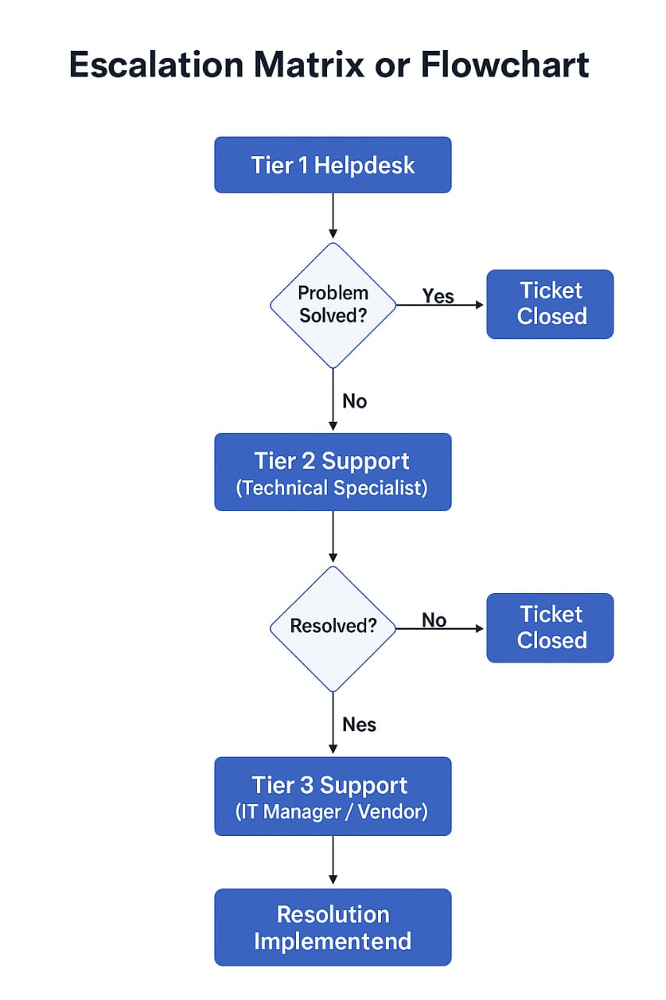

1. Customer Service Standards Statement
As an IT supervisor, I believe in a customer-first philosophy where end users are not just clients, but valued partners in the successful operation of our IT environment. Customer service in IT is about respect, responsiveness, and resolution.
How IT Should Treat End Users: End users should be treated with patience, empathy, and dignity. We must avoid technical jargon and ensure users feel heard and respected, regardless of their technical ability. Our goal is to bridge the gap between technology and people through clear communication and reliable support.
Defining Great Service: Great service is defined by timeliness, transparency, and effectiveness. A great IT support interaction should leave the user informed and reassured. It's not just about solving the issue, but about how the user feels during and after the interaction.
Resolving Complaints with Professionalism: Complaints should be welcomed as opportunities to improve. I will:
- Acknowledge the complaint calmly and professionally.
- Investigate the issue without assigning blame.
- Provide updates regularly during resolution.
- Apologize where appropriate and ensure a fair outcome.
The hallmark of excellent IT support is not a lack of problems, but how we handle them.
2. Escalation Matrix / Flowchart
Below is a visual representation of the IT support escalation process, outlining when and how tickets move between support tiers to ensure efficient problem resolution.
 Download Flowchart (PNG)3. Sample Helpdesk Ticket Response
Subject: RE: Issue – Email Not Working
Dear [User Name],
Thank you for contacting the IT Helpdesk. I understand how frustrating it can be when email services are not functioning, especially when your work depends on it.
We are currently investigating the issue, and initial checks show a possible server-side error affecting multiple users. I have escalated your ticket to Tier 2 Support and expect to have an update within the next 30 minutes.
In the meantime, please let us know if you experience other issues or require an alternative communication method. Thank you for your patience.
Sincerely,
[Your Name]
IT Helpdesk Technician
[YourContact@domain.com]
4. Incident Report Template
You can download the comprehensive incident report template below. This form is designed to help document key details of any technical incident, from initial report to resolution and preventative measures.
Download Incident Report Template (DOCX)5. KPI Dashboard (Past 4 Weeks)
An overview of key metrics used to monitor IT support performance:
| KPI | Week 1 | Week 2 | Week 3 | Week 4 | Goal |
|---|---|---|---|---|---|
| Avg. Resolution Time (hrs) | 5.2 | 4.6 | 4.1 | 3.8 | ≤ 4.0 |
| Customer Satisfaction (%) | 88 | 90 | 92 | 94 | ≥ 90 |
| First Contact Resolution (%) | 72 | 75 | 78 | 81 | ≥ 80 |
| System Uptime (%) | 99.9 | 99.9 | 99.7 | 99.9 | ≥ 99.9 |
| Tickets Closed | 48 | 52 | 57 | 61 | ≥ 50 |
6. Mini Budget Plan
Estimated monthly team budget for essential IT resources:
| Category | Item(s) | Cost (INR) | Purpose |
|---|---|---|---|
| Software | Zoom Pro, Antivirus | 5,400 | Communication & Security |
| Training | Cloud Support Workshop | 3,000 | Cloud Infrastructure Upskilling |
| Hardware | Helpdesk Chairs, Laptops | 123,500 | Productivity & Comfort |
| Total | 131,900 | ||